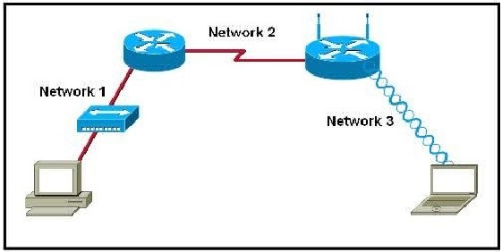
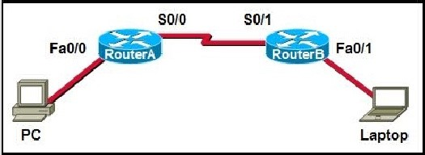
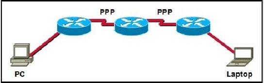
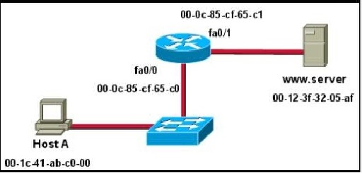

Chapter 7 – CCNA 1
01. What is true concerning physical and logical topologies?
- The logical topology is always the same as the physical topology.
- Physical topologies are concerned with how a network transfers frames.
- Physical signal paths are defined by Data Link layer protocols.
- Logical topologies consist of virtual connections between nodes.
02. What determines the method of media access control? (Choose two.)
- network layer addressing;
- media sharing;
- application processes;
- logical topology;
- intermediary device function.
03. Which statements describe the logical token-passing topology? (Choose two.)
- Network usage is on a first come, first serve basis.
- Computers are allowed to transmit data only when they possess a token.
- Data from a host is received by all other hosts.
- Electronic tokens are passed sequentially to each other.
- Token passing networks have problems with high collision rates.
04.  Refer to the exhibit. Which statement describes the media access control methods that are used by the networks in the exhibit?
{kind=link}
- All three networks use CSMA/CA;
- None of the networks require media access control;
- Network 1 uses CSMA/CD and Network 3 uses CSMA/CA;
- Network 1 uses CSMA/CA and Network 2 uses CSMA/CD;
- Network 2 uses CSMA/CA and Network 3 uses CSMA/CD.
05. What is true regarding media access control? (Choose three.)
- Ethernet utilizes CSMA/CD;
- defined as placement of data frames on the media;
- contention-based access is also known as deterministic;
- 802.11 utilizes CSMA/CD;
- Data Link layer protocols define the rules for access to different media;
- controlled access contains data collisions.
06. Which options are properties of contention-based media access for a shared media? (Choose three.)
- non-deterministic;
- less overhead;
- one station transmits at a time;
- collisions exist;
- devices must wait their turn;
- token passing.
07. What is a function of the data link layer?
- provides the formatting of data;
- provides end-to-end delivery of data between hosts;
- provides delivery of data between two applications;
- provides for the exchange data over a common local media.
08. What statements are true regarding addresses found at each layer of the OSI model? (Choose two.)
- Layer 2 may identify devices by a physical address burned into the network card;
- Layer 2 identifies the applications that are communicating;
- Layer 3 represents a hierarchical addressing scheme;
- Layer 4 directs communication to the proper destination network;
- Layer 4 addresses are used by intermediary devices to forward data.
09.  Refer to the exhibit. A frame is being sent from the PC to the laptop. Which source MAC and IP addresses will be included in the frame as it leaves RouterB? (Choose two.)
{kind=link}
- source MAC – PC;
- source MAC – S0/0 on RouterA;
- source MAC – Fa0/1 on RouterB;
- source IP – PC;
- source IP – S0/0 on RouterA;
- source IP – Fa0/1 of RouterB.
10. What is the purpose of the preamble in an Ethernet frame?
- is used as a pad for data;
- identifies the source address;
- identifies the destination address;
- marks the end of timing information;
- is used for timing synchronization with alternating patterns of ones and zeros.
11. What is the primary purpose of the trailer in a data link layer frame?
- define the logical topology;
- provide media access control;
- support frame error detection;
- carry routing information for the frame.
12. What is a characteristic of a logical point-to-point topology?
- The nodes are physically connected.
- The physical arrangement of the nodes is restricted.
- The media access control protocol can be very simple.
- The data link layer protocol used over the link requires a large frame header.
13.  Refer to the exhibit. How many unique CRC calculations will take place as traffic routes from the PC to the laptop?
{kind=link}
- 1
- 2
- 4
- 8
14. Which sublayer of the data link layer prepares a signal to be transmitted at the physical layer?
- LLC;
- MAC;
- HDLC;
- NIC.
15.  Refer to the exhibit. Assuming that the network in the exhibit is converged meaning the routing tables and ARP tables are complete, which MAC address will Host A place in the destination address field of Ethernet frames destined for www.server?
{kind=link}
- 00-1c-41-ab-c0-00;
- 00-0c-85-cf-65-c0;
- 00-0c-85-cf-65-c1;
- 00-12-3f-32-05-af.
16. What two facts are true when a device is moved from one network or subnet to another? (Choose two.)
- The Layer 2 address must be reassigned.
- The default gateway address should not be changed.
- The device will still operate at the same Layer 2 address.
- Applications and services will need additional port numbers assigned.
- The Layer 3 address must be reassigned to allow communications to the new network.
17. A network administrator has been asked to provide a graphic representation of exactly where the company network wiring and equipment are located in the building. What is this type of drawing?
- logical topology;
- physical topology;
- cable path;
- wiring grid;
- access topology.
18. What is a primary purpose of encapsulating packets into frames?
- provide routes across the internetwork;
- format the data for presentation to the user;
- facilitate the entry and exit of data on media;
- identify the services to which transported data is associated.
19. What are three characteristics of valid Ethernet Layer 2 addresses? (Choose three.)
- They are 48 binary bits in length.
- They are considered physical addresses.
- They are generally represented in hexadecimal format.
- They consist of four eight-bit octets of binary numbers.
- They are used to determine the data path through the network.
- They must be changed when an Ethernet device is added or moved within the network.
20. Which three factors should be considered when implementing a Layer 2 protocol in a network? (Choose three.)
- the Layer 3 protocol selected;
- the geographic scope of the network;
- the PDU defined by the transport layer;
- the physical layer implementation;
- the number of hosts to be interconnected.